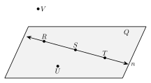

1.1 Points, Lines, Segments, and Angles
- Name points, lines, segments, rays, and planes
- Write segments, rays, lines, and angles with the correct symbols
- Name an angle and classify it as acute, right, obtuse, or straight
- Tell what a figure shows for sure and what it only seems to show
Warm-Up
2. The corner at B is a right angle (square corner)
3. x + 35 = 90
x + 35 − 35 = 90 − 35
x = 55

1.1.1Points, Lines, and Planes
- A point is an exact location. It has no size. We name it with a capital letter.
- A line is straight and goes on forever in both directions. The arrows show that it never stops.
- A plane is a flat surface that goes on forever in every direction.
- Through any two points there is exactly one line.
- Points on the same line are collinear. Points in the same plane are coplanar.
| Object | Picture | Name | Symbol |
|---|---|---|---|
| point | point A | A | |
| line | line AB, or one small letter like line ℓ | AB | |
| plane |  |
plane P, or three points in it that are not on one line |

a. Name line ℓ another way. AB
b. Name three collinear points. A, B, C
c. Are A, B, and D collinear? No. D is not on line ℓ.
d. Name a point that is not in plane M. E
a. Name line ℓ using points B and C. BC
b. Name three points in plane M that are not collinear. A, B, D
1.1.2Segments and Rays
- A segment is part of a line between two endpoints.
- A ray starts at one endpoint and goes on forever in one direction.
| Object | Picture | Name | Symbol |
|---|---|---|---|
| segment |  | segment AB | AB |
| ray |  | ray AB | AB |
a. Name the two rays that start at Q. QP and QR
They have the same endpoint and go in opposite directions. They are opposite rays.
b. Name every segment in the figure. PQ, QR, PR
a. Is PQ the same ray as PR? Explain.
Yes. Both start at P and go right forever through the same points.
b. Is QP the same ray as PQ? Explain.
No. QP starts at Q and goes left. PQ starts at P and goes right.
1.1.3Angles
- An angle is two rays with the same endpoint.
- The rays are the sides. The shared endpoint is the vertex.
- We measure angles in degrees (°). One full turn is 360°.
Three ways to name this angle:
Three letters, vertex in the middle: ∠ABC or ∠CBA The vertex only: ∠B The number: ∠1
This angle measures 130°. Write it with symbols: m∠ABC = 130°
∠ABC
∠CBD
∠ABD
a. Name ∠CBD another way with three letters. ∠DBC
b. Which of the three angles is the largest? Why? ∠ABD. It is the other two together.
1.1.4Classifying Angles
| Type | Draw one | Measure |
|---|---|---|
| acute | (a small, sharp angle) | more than 0° and less than 90° |
| right | (a square corner, marked with a box) | exactly 90° |
| obtuse | (a wide angle) | more than 90° and less than 180° |
| straight | (looks like a line) | exactly 180° |
A full turn is 360°. A clock has 12 hour marks.
One hour mark to the next: 360° ÷ 12 = 30°
At 2:00 the hands are 2 hour marks apart: 2 × 30° = 60°
The angle is acute because 60° < 90°
5 × 30° = 150°. It is between 90° and 180°, so the angle is obtuse.
1.1.5What a Figure Shows
- A small square at a vertex means a right angle.
- Matching tick marks mean segments have the same length.
a. Which angle is a right angle for sure? ∠1. It has the square mark.
b. Is ∠2 a right angle? Cannot tell. It has no mark.
c. Which segments have the same length for sure? AB and CD
d. Do EF and GH have the same length? Cannot tell. They have no marks.
Yes. They get closer to the right, and lines go on forever, so they meet past the edge of the page.
1. A segment has two endpoints. A ray has one.
2. The first letter in the name of a ray is its endpoint.
3. In the name ∠ABC, the vertex is B.
4. An angle of 120° is obtuse.
5. We trust what a figure marks, not what it looks like.
Practice
Points, Lines, and Planes

1. Name line n two other ways. RS, ST
2. Name three collinear points. R, S, T
3. Name a point in plane Q that is not on line n. U
4. Name a point that is not in plane Q. V
Write the Symbol
5. The segment with endpoints R and S. RS
6. The ray that starts at T and goes through U. TU
7. The line through M and N. MN
8. The length of the segment with endpoints X and Y. XY
True or False? Explain Your Answer.
9. GH and HG are the same segment.
True. A segment is named by its two endpoints in either order.
10. GH and HG are the same ray.
False. GH starts at G. HG starts at H and goes the other way.
Naming and Classifying Angles

11. Name the three angles with vertex K.
∠JKL, ∠LKM, ∠JKM
12. Why is ∠K not a good name for any of them?
Three angles share vertex K, so ∠K does not say which one.
13. Classify ∠LKM. acute
14. Classify ∠JKM. obtuse
15. 12° acute
16. 90° right
17. 145° obtuse
18. 180° straight
Clock Angles
| Time | Work | Angle | Type |
|---|---|---|---|
| 19. 3:00 | 3 × 30° | 90° | right |
| 20. 4:00 | 4 × 30° | 120° | obtuse |
| 21. 6:00 | 6 × 30° | 180° | straight |
| 22. 1:00 | 1 × 30° | 30° | acute |
What Does the Figure Show?
23. ∠A is a right angle. must be true
24. ∠C is a right angle. cannot tell
25. AB = BC must be true
26. CD = DA cannot tell
27. Is ABCD a square? Explain how you know.
We cannot tell. Only ∠A is marked as a right angle, and only AB and BC are marked equal.
Test Practice
A. BA and BC are opposite rays. ← correct
B. AB and BC are opposite rays.
C. BA and AB are the same ray.
D. AB is longer than AC.
A. acute
B. right
C. obtuse ← 96°
D. straight
Challenge
6 lines: AB, AC, AD, BC, BD, CD.